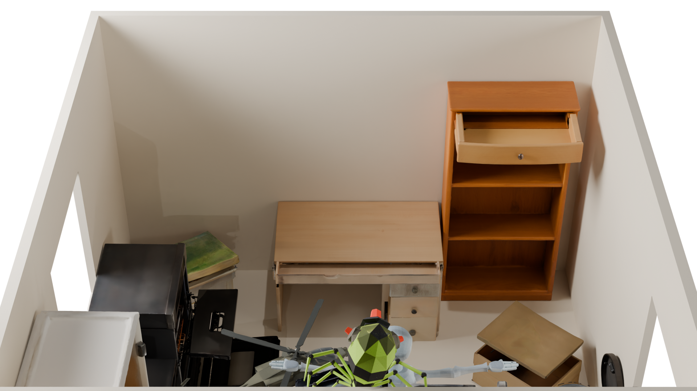

Articulated 3D objects are essential for interactive environments in embodied AI, robotics, and virtual reality, but reconstructing their structure and motion from sparse observations remains challenging. Existing approaches remain largely constrained by lack of supervised data or lack the priors needed to reliably recover articulation, hidden geometry, and internal object structure.
We present the first debate-driven agentic approach to articulated 3D object reconstruction from text or image inputs that both grounds articulation reasoning in concrete motion and exposes the occluded geometry revealed under articulation. High-level agents reason about object semantics and motion using knowledge from vision-language and video models, while low-level agents estimate articulation parameters and interaction points; together, they engage in a two-round structured debate that first exploits global–local disagreement and then grounds the agents in freely generated video.
The same video prior, conditioned on the agreed articulation, then drives each part through its motion to expose occluded interiors and geometry that cannot be inferred from a single static view. By combining agentic reasoning with a video generative prior, our approach jointly infers articulation and reconstructs complete 3D articulated objects, producing high-fidelity geometry, internal structure, and motion-consistent states beyond directly observed surfaces.
Articulation reasoning is most reliable when distributed across scales rather than collapsed into a single query. We therefore split the task across a hierarchy of three LLM/VLM agents that divide labor between global semantic reasoning and local geometric prediction.
Reasons globally over the object to identify movable parts and their plausible motion families.
Chooses a 2D segmentation strategy on the mesh and orchestrates the per-part articulation order.
Predicts the joint type, axis, and initial pivot for each part, the most error-prone step.
@misc{boudjoghra2026unfoldartzeroshotrecoveryarticulated,
title={UnfoldArt: Zero-Shot Recovery of Full Articulated 3D Objects from Text or Image},
author={Mohamed el amine boudjoghra and Ivan Laptev and Angela Dai},
year={2026},
eprint={2606.30608},
archivePrefix={arXiv},
primaryClass={cs.CV},
url={https://arxiv.org/abs/2606.30608},
}